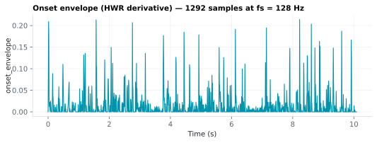

On this page
6.5.2Onset envelope (HWR derivative)
The onset envelope marks where the acoustic energy is rising — the moments the signal gets suddenly louder.
6.5.2.1What it is
The onset envelope marks where the acoustic energy is rising — the moments the signal gets suddenly louder. It is the half-wave-rectified first derivative of the amplitude envelope: positive at the leading edge of each syllable/note, zero everywhere the envelope is flat or falling. Where the plain envelope encodes how much energy there is, the onset envelope encodes acoustic change, which is what the auditory system is most sharply driven by.
Emitted as the column onset_envelope in
acoustic/<stim>_acoustic.mat, on the same grid (t, fs) as every other
acoustic feature.
6.5.2.2See it

6.5.2.3In your output
| variable | size | MATLAB class |
|---|---|---|
onset_envelope | 1292 × 1 | double |
t | 1292 × 1 | double |
fs | 1 × 1 | double |
6.5.2.4MATLAB
S = load('acoustic/LJ002-0321_acoustic.mat');
whos('-file', 'acoustic/LJ002-0321_acoustic.mat') % variables, sizes, classes
plot(S.t, S.onset_envelope); xlabel('Time (s)'); ylabel('onset_envelope') % one value per time step, fs = S.fs Hz
6.5.2.5How it's computed
Given the amplitude envelope env (same comp/method settings as the
envelope feature):
- First difference along time:
d[i] = env[i] − env[i−1], withd[0]set to 0 (np.diff(env, prepend=env[:1])) so the output stays exactly the same lengthNand on the same grid. - Half-wave rectify:
max(d, 0)(np.clip(d, 0, None)) — keep only the positive-going changes (onsets), discard the falling edges (offsets).
The result is a non-negative time series that is the discrete-time rate of increase of loudness. It is sometimes called the acoustic onset signal or (positive) envelope derivative; in music-information-retrieval terms it is a broadband onset-strength / spectral-flux-like signal computed on the broadband envelope rather than per frequency band.
6.5.2.6How to set the analysis rate to match your EEG
The onset envelope inherits the envelope's grid, so
the same rule applies: set analysis_rate to your EEG rate (typically 64 or
128 Hz) and the column will have round(duration × rate) samples aligned to
t/fs.
One rate-specific caveat: because the onset envelope is a derivative, its
magnitude scales with the grid spacing — a difference per sample is a
difference per 1/rate seconds. If you compare onset-envelope amplitudes
across stimuli analyzed at different analysis_rate values, normalize
(e.g. z-score) first, or multiply by rate to express it per second. Within
one study at a fixed rate this is a non-issue. Like the envelope, the column
is returned raw (not normalized).
6.5.2.7In the code
Source: sensi/extractors/acoustic_ts.py → onset_envelope(env). It takes the
already-computed amplitude envelope as input (so the env_method/comp
choices flow through automatically) and returns np.clip(np.diff(env, prepend=env[:1]), 0, None). In the orchestrator extract_acoustic, the
envelope is computed once and reused for both envelope and
onset_envelope, so enabling the onset feature adds negligible cost.
6.5.2.8Library
from extractors.acoustic_ts import amplitude_envelope, onset_envelope
env = amplitude_envelope(y, sr, rate=128, method="rms", comp=0.3)
onset = onset_envelope(env) # same length as env, >= 0
6.5.2.9EEG rationale
A growing body of intracranial and scalp work shows that auditory cortex responds less to the level of the envelope than to its rate of change at acoustic onset edges. Oganian & Chang found a zone in middle superior temporal gyrus that encodes peakRate — the local maxima in the rate of change of the speech envelope — and that this onset-edge landmark cues syllable nuclei and carries much of the envelope's explanatory power for neural responses Oganian 2019. Including an onset predictor alongside the plain envelope in a TRF often improves fit and yields a sharper, earlier response component than the envelope alone Crosse 2016.
Relationship to peakRate: the SENSI SpeechFeatures feature is the continuous
half-wave-rectified derivative of the envelope, i.e. the positive rate of
change at every grid point. The peakRate landmark of Oganian 2019 is the
set of local maxima of the envelope's derivative. The two use different
envelopes, though: Oganian & Chang derive theirs from an auditory filterbank
(per-band loudness, band-passed 1–10 Hz), while this column differentiates
the envelope chosen in envelope. So this column is
the same kind of signal peakRate is picked from, not an exact
reproduction: useful as a continuous TRF regressor and as input to a
peak-picking step, but expect event times close to, not identical with, the
published peakRate.
6.5.2.10Papers
- Oganian 2019 Oganian & Chang. A speech envelope landmark for syllable encoding in human superior temporal gyrus. Science Advances 5(11), eaay6279. doi:10.1126/sciadv.aay6279 — middle-STG encodes peakRate (local maxima of the envelope's rate of change), an acoustic-onset-edge landmark.
- Crosse 2016 Crosse, Di Liberto, Bednar, Lalor. The Multivariate Temporal Response Function (mTRF) Toolbox. Frontiers in Human Neuroscience 10, 604. doi:10.3389/fnhum.2016.00604 — onset/derivative predictors as standard TRF regressors.
- Lalor 2010 Lalor & Foxe. Neural responses to uninterrupted natural speech can be extracted with precise temporal resolution. European Journal of Neuroscience 31(1), 189–193. doi:10.1111/j.1460-9568.2009.07055.x — foundational envelope-TRF method on which onset predictors build.